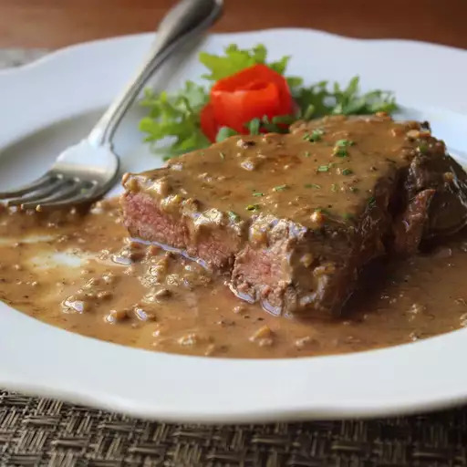

Steak Diane

Description
Steak Diane was a staple on menus in fine dining establishments back in the day.
Prepared tableside where the server ignited the cognac, it was an impressive sight.
You don't need to flame the cognac; just keeping it on the heat will eventually evaporate the alcohol.
But be careful--it can still flare up if the heat's high enough when you're reducing the sauce.
Ingredients
Sauce:
- demi-glace: ½ cup demi-glace
- Dijon mustard: 1 tablespoon Dijon mustard
- Worcestershire sauce: 2 teaspoons Worcestershire sauce
- Tomato paste: 1 teaspoon tomato paste
- Cayenne pepper: 1 pinch cayenne pepper
Steaks:
- Vegetable oil: 2 teaspoons vegetable oil
- Beef tenderloin steak: 2 (8 ounce) beef tenderloin steaks, fully trimmed, pounded to 1/2 inch thick
- Salt and pepper: Kosher salt and freshly ground black pepper, to taste
- Butter: 1 tablespoon unsalted butter, cut into small chunks
- Shallot: 3 tablespoons shallot, minced
- Cognac: ¼ cup Cognac or brandy
- Cream: ¼ cup heavy cream
- Chives: 2 teaspoons sliced fresh chives